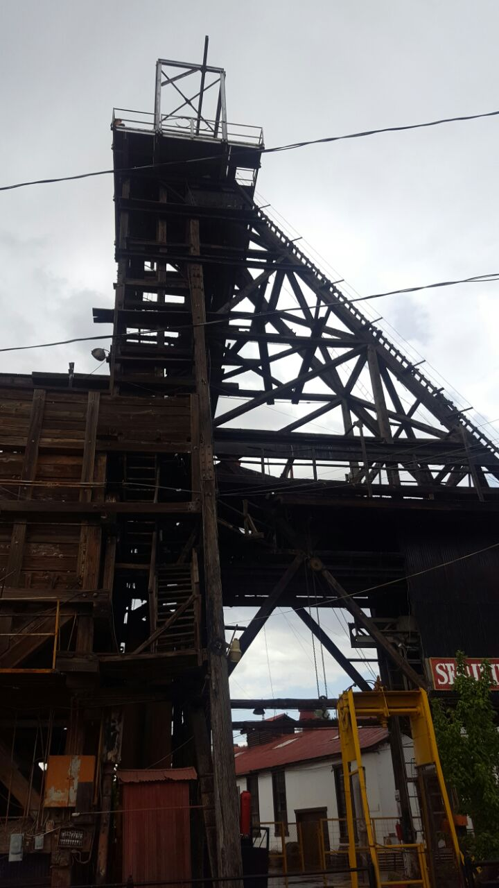
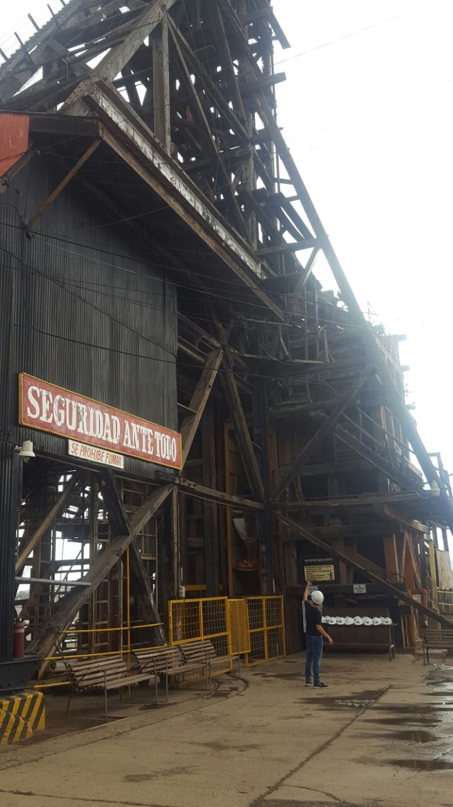

Hidalgo del Parral, Chihuahua
La Capital del Mundo
Mina la Prieta
Mina La Prieta, punto reconocido como el que da origen y razón de fundar Hidalgo del Parral. Actualmente está fuera de operación, se encuentra en ella un mirador. Hay visitas guiadas al interior de la mina y algunas oficinas municipales. En el siglo XVII, con el hallazgo de vetas, se convirtió en detonante del crecimiento de una ciudad colonial, Hidalgo del Parral, en Chihuahua. De aquí dependía la economía de Parral, pero no sólo hubo esta mina, hubieron más tan importantes, pero esta fue la mina fundadora. Conocer la mina La Prieta desde adentro implica viajar bajo tierra a 87 metros de profundidad sobre el tiro La Aguilereña. En total existen 25 niveles y dos tiros importantes. La Prieta, que paró su actividad hace más de 10 años, parece viva aún, sobre las rocas brillan metales como el plomo, veta que sirvió para encontrar plata en otra época, durante la colonia sólo plata, después, plomo, cobre y zinc, oro, pero en pocas cantidades. El agua que escurre sobre las piedras fue la causa para que esta mina parara su producción. 345 años permaneció abierta, conocida como La Negrita, 1926 es el año de esplendor de esta mina, de la que se extraían mil 500 toneladas de minerales puros al día.
Horario:
Martes a Domingo 10:00 AM – 5:00 PM.Costo de entrada:
Adultos $25 - Niños $15.Telefono:
627-525-4400


